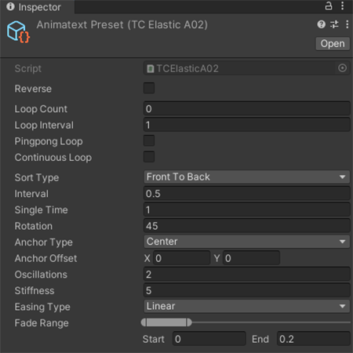

Preset
Create
Go to "Project" panel, right-click and select "Create - Animatext Free Preset", then click on any item to create.

Category
Unit
Based on the units used, there are four preset categories: Character, Word, Line and Group.
CharacterPresets executed in visible characters.
WordPresets executed in words that are divided by spaces.
LinePresets executed in lines that are divided by line feeds (ASCII).
GroupPresets executed in groups that are defined by using tags.
Other than groups, characters, words and lines can also be re-defined by using tags, refer to Tag for details.
Type
Presets can be divided into 2 types: Transition and Coherence.
TransitionPresets of text transition effects.
CoherencePresets of continuous and coherent text effects.
Effect
Based on their effects, presets can also be divided into the following categories.
BasicPresets of basic effects.
BouncePresets of bounce effects.
ElasticPresets of elastic effects.
Parameter
Regular
ReversePreset execution in reverse.
Loop CountHow many times the preset loops itself. It means infinite loop when it's value is less than or equal 0.
Loop IntervalThe interval between every two consecutive loops.
Pingpong LoopWhether to execute the loop in a back-and-forth manner.
Continuous LoopWhether the unit loops continuously. "Yes" means the unit will loop continuously. "No" means the unit will wait for all other units to finish before starting its next loop.
-
Sort TypeThe order of unit execution, taking 0,1,2,3,4,5,6 as an example.
Front To Back0,1,2,3,4,5,6 - Back To Front6,5,4,3,2,1,0
Front to Middle0,1,2,6,5,4,3 - Middle To Front3,4,5,6,2,1,0
Back To Middle6,5,4,0,1,2,3 - Middle To Back3,2,1,0,4,5,6
Middle To Sides Front3,2,4,1,5,0,6 - Middle To Sides Back3,4,2,5,1,6,0
Sides To Middle Front0,6,1,5,2,4,3 - Sides To Middle Back6,0,5,1,4,2,3
Bounce
BouncesThe number of bounces.
BouncinessDegree of each bounce.
Elastic
OscillationsThe number of full oscillations.
StiffnessOscillation stiffness. The higher stiffness means the oscillation will reduce in intensity faster.